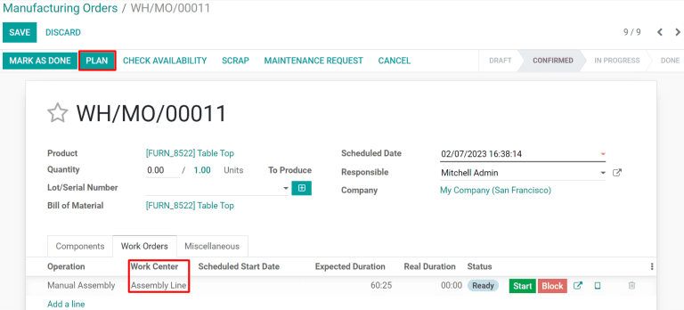

Manage work orders using work centers¶
Odoo Manufacturing allows for work orders to be carried out at specific work centers. When a manufacturing order is created for a product, any work orders listed in the Operations tab of the product bill of materials (BoM) will be automatically created as well and assigned to the specified work center. Work orders can be managed in the Manufacturing module by selecting .
In order to use work centers, the Work Orders feature must first be enabled. To do so, go to the Manufacturing module, select , and activate the checkbox next to Work Orders. Work centers can then be created and managed by selecting .
Create a work center¶
Within the Manufacturing module, select . The work center form can then be filled out as follows:
Work Center Name: give the work center a concise name that describes the type of operations it will be used for
Alternative Workcenters: specify an alternative work center for operations to be carried out at if the main work center is not available
Code: assign the work center a reference code
Working Hours: define the number of hours that the work center can be in use each week
Company: select the company that the work center belongs to

Set standards for work center productivity¶
The General Information tab on the work center form allows for productivity goals to be assigned to a work center:
Time Efficiency: used to calculate the expected duration of a work order at the work center; for example, if a work order normally takes one hour and the efficiency is set to 200%, the work order will take 30 minutes
Capacity: the number of operations that can be performed at the work center simultaneously
OEE Target: the target for efficiency at the work center
Time before prod.: setup time required before work can commence
Time after prod.: breakdown or cleanup time required after work is finished
Cost per hour: the cost of operating the work center for one hour
Analytic Account: the account where the cost of the work center should be recorded
Assign equipment to a work center¶
Using the Equipment tab, it is possible for specific pieces of equipment to be assigned to a work center. The following information will be displayed for each piece of equipment added:
Equipment Name: the name of the piece of equipment
Technician: the technician responsible for servicing the equipment
Equipment Category: the category the equipment belongs to
MTBF: mean time between failures; the average time that the piece of equipment will operate before failing
MTTR: mean time to recovery; the average time it takes for the equipment to become fully operational again
Est. Next Failure: an estimate of when the next equipment failure will occur

Note
MTBF, MTTR, and Est. Next Failure are all calculated automatically based on past failure data, if any exists.
Integrate IoT devices¶
The IoT Triggers tab enables the integration of IoT devices with a work center:
Device: specifies the IoT device to be triggered
Key: the security key for the device
Action: the IoT device action triggered

Use case: configure an alternative work center¶
When a work center is at capacity, it cannot accept any new work orders. Instead of waiting for the work center to become available, it is possible to specify an alternative work center where surplus work orders should be carried out.
Begin by creating a new work center. Configure the Equipment tab so that it has all of the same equipment as the main work center. This will ensure that the same tasks can be carried out at both work centers. Navigate to the main work center and include the new work center in the Alternative Workcenters selection field.
Now, create a new manufacturing order that uses the main work center for one of its operations. The main work center will automatically be selected for the operation in the Work Orders tab. After confirming the manufacturing order, click the Plan button that appears at the top left of the form.
If the main work center is at capacity, the work center selected for the operation will be automatically changed to the alternative work center.

Monitor work center performance¶
Performance for an individual work center can be viewed by selecting , and clicking on a work center. A variety of metrics showing work center performance can be viewed at the top right of the form:
OEE: overall effective efficiency, the percentage of time that the work center has been fully productive
Lost: the amount of time lost due to work stoppages
Load: the amount of time it will take to complete the current workload
Performance: the real duration of work time, shown as a percentage of the expected duration